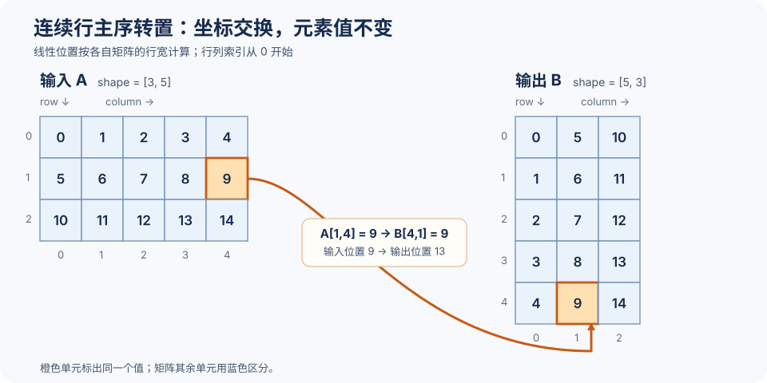

第一章 访存与布局算子：从数据搬运到高效转置#
copy（复制）、transpose（转置）、permute（轴置换）、gather（聚集读取）、scatter（分散写入）和 embedding（嵌入查表）的主要工作是移动数据。逻辑坐标决定值的来源与去向，stride（步长）决定地址，线程分工决定一次内存指令覆盖哪些位置。
view 只改变张量的解释方式，物化转置则产生新的存储布局。两者的流量、别名关系和计时范围不同；对齐、尾部与共享内存转置将在具体实现中分别处理。
1. copy、view、transpose 和 permute#
1.1 copy 复制逻辑元素，布局合同需要另外声明#
给定源张量 src 和目标张量 dst，copy 的逻辑合同是：对每个合法逻辑坐标 i，dst[i] = src[i]，两边逻辑形状相同，但物理stride不一定相同。通用copy可以把非连续源复制到连续目标；下面的最小实现单独限定两端都是contiguous。若源和目标都是 contiguous，N 个元素的 copy 只读 N 个元素、写 N 个元素，没有有效 FLOPs。
copy 可以是设备内的 global-to-global 搬运，也可以是 host-to-device、device-to-host 或 peer-to-peer。不要把 host 传输时间和 device kernel 时间混成一个数字：它们经过的链路、同步方式和带宽上限不同。本章的 transpose 实验只测设备上的 out-of-place kernel，输入和输出先分配在同一张 GPU 上。
1.2 view 只改解释，不搬数据#
view 通过修改 shape、stride 或 storage offset 解释同一块 storage。例如二维 A 的转置 view 可以把 shape 从 [M, N] 改成 [N, M]，把 stride 从 [N, 1] 改成 [1, N]，但它不产生新的 N×M 数据。创建 view 的时间通常只是元数据操作，不能拿它与真实 transpose 的 kernel 时间比较。
y = x.transpose(0, 1) # view：通常只改变 shape/stride
z = y.contiguous() # materialize：真正读写一份转置后的 storage
assert z.shape == (x.shape[1], x.shape[0])下游算子是否接受非 contiguous stride 决定 materialize 的位置。如果下游 kernel 能直接按 stride 读取，立即 materialize 可能是多余搬运；如果下游只接受 contiguous，view 的成本可能延迟到后面的 contiguous。
1.3 transpose 是二维轴交换，真实 transpose 是布局重排#
对 row-major 的 A[M, N]，二维 transpose 的数学定义是
如果 B 是一个真实、contiguous 的新张量，它按 B[c, r] 的 row-major 顺序存储，线性地址是 c×M + r。因此每个元素的物理地址都重新排列；这与共享原始storage、stride为[1,N]的转置view不同。
“真实 transpose”在本章特指 out-of-place materialization：源和目标 storage 不重叠，目标拥有 N×M 个元素，并且 benchmark 覆盖生成目标数据的读写时间。可能有 overlap 的 in-place 变体需要另立 alias 合同和依赖分析，不能套用本章的无 overlap 假设。
1.4 permute 是任意轴排列#
对 X[D0, D1, ..., Dk-1]，permute(p) 把输出轴 j 映射到输入轴 p[j]。二维 permute([1, 0]) 是 transpose；三维 permute([0, 2, 1]) 只交换后两个轴。若只是返回 stride view，它仍然不搬数据；若目标要求 contiguous，就要执行多维真实重排。高维 permute 的难点是最后一维是否仍连续、每个 program 的线性化方式，以及小维度带来的尾部浪费。
2. 形状、步长、元素大小与字节地址#
2.1 shape 说元素数，stride 说跳多少#
对 rank-R 张量，shape[d] 是第 d 维长度，stride[d] 通常以 element 为单位，表示该维下标增加一格时 storage offset 增加多少个元素。给定逻辑下标 i，element offset 是
真正的 byte address 还要乘上 elementbyte：
unit 必须说清楚：PyTorch 的 stride 以元素为单位，NumPy 的 strides 以字节为单位；CUDA 指针加法通常以所指向的 C++ 类型为单位；手算 global transaction 时最终必须回到 byte address。把 stride=1 直接说成“1 byte”是常见错误。
上式的 base 指底层存储的起始地址。如果使用 tensor.data_ptr()，得到的已经是该张量第一个逻辑元素的地址，包含切片带来的 storage offset。此时只应再加各维的 stride 偏移，不能重复加 storage_offset。
例如，x 是连续的 FP32 [4,6] 矩阵，v=x[1:3,1:5:2] 的形状为 [2,2]，stride 为 (6,2)，storage offset 为 7。计算 v[1,1] 时有两种等价写法：
两者都指向底层第 15 个元素。把 PyTorch 张量传给 Triton 时，传入指针对应该张量的起始位置；kernel 按传入的 stride 寻址即可。这个例子同时说明，形状相同的张量不一定有相同的地址步长。
2.2 contiguous 不是唯一合法布局#
row-major contiguous 的二维 [M, N] 张量通常是 stride=[N, 1]；列方向相邻元素的 byte 间距是 elementbyte，行方向相邻元素的 byte 间距是 N×elementbyte。转置 view 的 stride 变成 [1, N]，逻辑上合法，但若沿输出最后一维遍历，物理访问可能是大步长。
每个 kernel 都要先声明支持哪一种合同：
- contiguous-only：输入或输出必须满足标准 contiguous stride，地址计算可以简化，向量化前提更容易证明。
- arbitrary-stride：每个维度显式传入 stride，功能覆盖更广，但索引整数、访存模式和向量化条件都要重新证明。
- same-storage view：只返回 shape/stride 元数据，不进入本章的真实搬运 benchmark。
如果一个 kernel 在 contiguous tensor 上正确，却在 x[:, ::2]、转置 view 或带 offset 的 slice 上错误，说明 shape/stride 合同没有实现。
2.3 元素大小决定跨度与流量账本#
float32 的每元素大小为 4 bytes，float16/bfloat16 为 2，int8 为 1。相同的 element stride 在不同 dtype 下对应不同 byte stride；相同 shape 在不同 dtype 下也有不同的有效流量。一个 float4 变量包含四个 float32，逻辑上仍是 4 个元素、16 bytes，不能因为 C++ 类型变宽就把有效工作量少算四倍。
对于 N 个元素、每元素 E bytes 的 out-of-place copy 或 transpose，理想有效数据量是
若 kernel 时间为 t 秒，十进制有效带宽是
这只是“有用读写字节”除以时间，不是硬件真正从 DRAM 发出的字节数；不合并访问、尾部 sector、缓存回写和额外 staging 都可能让实际传输更多。
这个计算描述完成任务所需的有效读写。实现层还需要根据各 lane 的地址判断请求能否合并，并处理尾部的无效位置；实际经过 L2 或 DRAM 的流量则由缓存行为共同决定。因此，比较带宽时应分别列出算法有效字节数和性能分析器测得的实际传输量。
3. CUDA 与 Triton 的最小 copy#
3.1 CUDA：线程索引到 byte address#
最小 contiguous copy 是把线性 index 映射到 global memory。工程版本要有边界判断、错误检查和明确 alias 合同；下面只保留关键片段，完整例程按题面重新组织。
__global__ void copy_f32(const float* __restrict__ src,
float* __restrict__ dst, int n) {
int i = blockIdx.x * blockDim.x + threadIdx.x;
if (i < n) dst[i] = src[i];
}__restrict__ 是编译器可依赖的 aliasing contract：在这个调用合同中，src 指向的对象不会通过 dst 可达的别名被修改，反之亦然。它不是同步原语，也不会让任意重叠指针变得安全。只有 API、调用者和生命周期真的保证不重叠时才能写；若允许 src == dst 或部分 overlap，就删除这个限定并为重叠语义单独设计。
CUDA Programming Guide 13.3 的 §2.3.3.3 还提醒：kernel 内没有地址空间限定的自动变量会尽量进寄存器，必要时进入 local memory；local memory 在物理上属于 device memory 路径，不要把“线程私有”误读成“片上”。为了索引添加的局部数组，可能最后带来额外 global/local load/store。
3.2 Triton：program 负责一段线性 block#
Triton 通常让一个 program 处理 BLOCK 个元素，用 tl.arange 生成偏移，用 mask 保护尾部。tl.multiple_of 是对编译器的对齐/倍数提示，不是运行时边界检查；给错提示可能改变生成代码并造成未定义行为。
@triton.jit
def copy_kernel(src, dst, n, BLOCK: tl.constexpr):
pid = tl.program_id(0)
offs = pid * BLOCK + tl.arange(0, BLOCK)
x = tl.load(src + offs, mask=offs < n, other=0.0)
tl.store(dst + offs, x, mask=offs < n)CUDA的一线程索引与Triton的一整块逻辑偏移，承担相似的数据划分职责，但不是逐线程的一一映射。Triton如何把BLOCK个值分到thread/warp由编译器布局与配置决定；mask控制的是逻辑tile中的有效访问。两者的性能问题仍是同一个：相邻 lane 是否落在少量 32B segment，尾部是否引入大量无效 lane，目标指针对齐是否满足向量化条件。
3.3 scalar、float4 和 tail#
float4 向量化常用来减少指令条数、改善每条 load/store 的粒度，典型前提是地址满足 16B 对齐且主循环有至少四个连续 float。逻辑上可以把 N 分成 N/4 个 vector 和 N%4 个 scalar tail：
下面先用串行伪代码说明向量主体与尾部划分；它不是可以让所有CUDA线程原样重复执行的kernel。
std::size_t vec_n = n / 4;
auto* src4 = reinterpret_cast<const float4*>(src);
auto* dst4 = reinterpret_cast<float4*>(dst);
for (std::size_t j = 0; j < vec_n; ++j) dst4[j] = src4[j];
for (std::size_t i = vec_n * 4; i < n; ++i) dst[i] = src[i];这段片段只有在 src、dst 均 16B 对齐、区域足够大且不重叠时才符合合同。若 base 地址、slice offset 或每行 stride 不是 16B 对齐，不能只看 N%4==0 就强转 float4*。对二维 copy，每行起始地址都要重新检查；第一行对齐不代表下一行 stride×elementbyte 仍对齐。
4. coalescing：从 lane 地址推导 transaction#
Warp 执行一条 global memory 访存指令时，硬件根据各 lane 的地址，将请求合并为覆盖这些地址所需的尽可能少的 32 B 事务。对 FP32，一条 load 若让 32 个 lane 访问连续 128 bytes，并且首地址按 32B 对齐，理想情况下覆盖四个 32B transaction。若相邻 lane 地址相隔至少 32 bytes，可能覆盖 32 个 transaction；有效数据仍为 128 bytes，事务利用率为 12.5%。官方 Best Practices §10.2.1 用 maximize bytes used / bytes transferred 表达同一原则。这里统计的是单条访存指令的请求覆盖，不是跨指令向量化，也不直接等于 DRAM 实际流量。
4.1 copy 的连续访问#
下面截取该 kernel 的索引与读写代码：
int i = blockIdx.x * blockDim.x + threadIdx.x;
if (i < n) dst[i] = src[i];分析读取 src[i] 的这条指令时，设一个完整 warp 的 lane 0 负责全局元素 i0。该 warp 中 lane l（l=0…31）读取元素 i0+l。令 base_addr 为 src[0] 的字节地址，则：
src[i] 的指针运算以元素为单位，编译器会按 sizeof(float) 缩放索引；乘 4 只用于把元素索引换算成字节地址。完整 warp 一次各读一个 FP32，覆盖连续 128B。若 base_addr+4×i0 按 32B 对齐，这些地址正好落在四个 32B segment；若起点只满足 4B 对齐且相对 32B 边界偏移 4B，同样 128B 的访问会跨五个 segment。
例如 blockDim.x=128 时，每个 block 含四个 warp。warp 0 的 i0=blockIdx.x×128，warp 1 的 i0=blockIdx.x×128+32；每个 warp 内 lane 仍是 0 到 31。无效尾部线程不会执行受 i<n 保护的 load，因此只统计有效 lane 覆盖的 segment。若把相同地址集合重新分配给不同 lane，segment 覆盖数不变；合并取决于该条指令涉及的地址集合，不要求 lane 按严格先后顺序执行。
本章 Triton 示例中的 tl.arange 给出逻辑 tile 索引，并不保证索引与硬件 lane 一一对应。实际 lane 布局由编译器和配置决定，因此这里的 CUDA 标量 copy 只用于手算地址，不能据此推断 Triton 的固定 lane 映射。
4.2 地址重复、请求合并与显式复用#
GPU 没有每个 warp 专属的 L1。一个 SM 上的 warp 共用该 SM 的 L1，包括这个 SM 上不同 block 的 warp；不同 SM 各有自己的 L1，而整块 GPU 上的 SM 共用 L2。CUDA Programming Guide：Caches
例如，warp 0 先读 A[0]，warp 1 随后也读 A[0]。warp 1 仍会执行自己的读取指令；若这次读取使用的缓存中还留着该数据，就直接从缓存取到，不必再次访问显存。数据被换出后，再从下一级取回。这里讨论已准备好的只读输入；有读写依赖时，仍需正确同步。
同一 warp 的线程在一条指令中读相同地址，涉及的是这条指令的请求如何合并。不同 warp 先后读同一地址，涉及的是后一次 load 能否命中缓存。两件事发生在不同层次。
下面用连续存放的 float 数组 A 表示行主序矩阵，每行有 N 个元素，lane 从 0 到 31。每个 float 占 4B，假设数组足够大。
所有线程读同一个数
CPPfloat x = A[0];一个 warp 的 32 个线程都要
A[0]这个数。同一条指令中的这些同地址请求可以一起处理，不必为每个线程各取一份 32B 数据。所有线程读一排相邻数
CPPfloat x = A[lane];lane 0 到 lane 31 分别读
A[0]到A[31]，共 128B。起始地址按 32B 对齐时，覆盖 4 个 32B 段；若起点比 32B 边界偏移 4B，则覆盖 5 段。这里每个线程读的是不同元素，只是这些元素连续排列。所有线程分别读各行第一个数
CPPfloat x = A[lane * N]; // N = 64读取的数组下标是
0、64、128……，相邻线程读取的位置相隔 256B。这条指令要访问 32 个不同的 32B 段，每段只需要其中 4B，其余 28B 在这次读取中没有用上。
同一个 block 会反复使用同一块数据时，可以先把它放进 shared memory，让 block 内线程一起复用；搬入数据和同步也要花成本。缓存已经能满足复用时，额外搬运未必划算，需结合实际访问和测量判断。
5. 从一份可运行 copy 观察向量化的收益和边界#
完整程序在 copy_alignment.cu。它比较标量copy与“对齐时使用float4，否则回退标量”的实现，分别检查起始偏移0和1个float，以及1、3、4、5、257和较大输入。两个实现使用同一grid，标量版本通过grid-stride循环覆盖剩余元素，避免把grid数量变化直接混成向量化收益。
下面是关键的设备代码。tid和step分别表示全局线程编号与整个grid的线程数：
const bool aligned = ((reinterpret_cast<std::uintptr_t>(src) |
reinterpret_cast<std::uintptr_t>(dst)) & 15u) == 0;
if (!aligned) {
for (std::size_t i = tid; i < n; i += step) dst[i] = src[i];
return;
}
const std::size_t vectors = n / 4;
const float4* src4 = reinterpret_cast<const float4*>(src);
float4* dst4 = reinterpret_cast<float4*>(dst);
for (std::size_t v = tid; v < vectors; v += step) dst4[v] = src4[v];
for (std::size_t i = vectors * 4 + tid; i < n; i += step) dst[i] = src[i];这里的对齐分支在一次调用中对所有线程相同，因为所有线程收到相同的src、dst基指针。没有16B对齐就不解引用float4指针。尾部与向量主体写入不相交的区域：主体覆盖0到4×vectors−1，尾部从4×vectors开始；不同线程又通过tid与step分开，因而不会重复写同一元素。
以N=7为例，vectors=1：线程0处理包含元素0、1、2、3的一个float4，标量尾部由线程0、1、2分别处理元素4、5、6。以N=3为例，vectors=0，全部由标量尾部处理。对src+1这样的slice，即使原始分配对齐，当前地址偏移4B，也会回退到标量路径。
restrict的前提独立于对齐。两个不同、都16B对齐的地址仍可能指向重叠区域；删除限定也不能让并发部分重叠copy自动拥有memmove的语义。本程序通过两次独立分配保证src与dst不重叠。
示例先初始化输入和输出、执行正确性比较，再预热与计时。复制不改变数值，有限测试输入应逐元素相等；未写入位置预填为非有限位模式，避免遗漏写入恰好被零值掩盖。对于要完整覆盖特殊浮点表示的测试，还可按位检查NaN payload与正负零，而不是用普通浮点相等判断。
这个程序重复使用同一对buffer，因此给出的是热工作集条件下的有效copy带宽。它不是“显存峰值测量工具”，也不意味着float4版本一定更快。向量化减少的指令是否足以抵消对齐检查、循环和尾处理，需要结合生成指令及目标形状判断。
实践绑定：copy 的实验合同。 copy_alignment.cu 只研究 contiguous FP32、非重叠输入输出、起始偏移 0/1 和 N=1,3,4,5,257 等尾部/对齐边界；它是转置题之前的访存预实验，不是 Matrix Transpose 的平台提交。报告时保留 N、起始偏移、预分配 buffer、warmup/iterations 和有效字节 2N×4，不要把向量化 copy 的结果外推到任意 stride。
6. 真实转置：读和写为什么不能沿用同一组线程坐标#
6.1 一个输出布局要求怎样改变地址#
转置把连续输入矩阵 A[M,N] 变成连续输出 B[N,M]。输入、输出使用不同且不重叠的存储；每个输入元素恰好写出一次：
以 M=3、N=5 为例，图中突出显示 A[1,4]=9 到 B[4,1]=9 的映射。

V1 为每个输入坐标安排一个 Triton program：program_id(0) 对应行，program_id(1) 对应列；读取 A[r,c] 后写到输出线性位置 c×rows+r。grid 为 (rows,cols)，恰好覆盖矩阵每个元素，因此不需要 mask。tl.arange(0,1) 产生长度为1的逻辑索引，不表示硬件只使用一个 thread。接口中的 stride 参数没有参与地址计算，所以本实现限定输入和输出为连续布局。
import torch
import triton
import triton.language as tl
@triton.jit
def matrix_transpose_kernel(input, output, rows, cols, stride_ir, stride_ic, stride_or, stride_oc):
# offset
offsetA = tl.program_id(0) * cols + tl.program_id(1) + tl.arange(0, 1)
offsetB = tl.program_id(1) * rows + tl.program_id(0) + tl.arange(0, 1)
# mask
# maskA = offsetA < (rows * cols)
# maskB = offsetB < (rows * cols)
# load
a = tl.load(input + offsetA)
# store
tl.store(output + offsetB, a)
# input, output are tensors on the GPU
def solve(input: torch.Tensor, output: torch.Tensor, rows: int, cols: int):
stride_ir, stride_ic = cols, 1
stride_or, stride_oc = rows, 1
grid = (rows, cols)
matrix_transpose_kernel[grid](
input, output, rows, cols, stride_ir, stride_ic, stride_or, stride_oc
)对 A[1,4]，V1 用 pid0=1,pid1=4 读取偏移 1×5+4=9，写到 4×3+1=13，即 B[4,1]。
6.2 Triton 分块：坐标、广播与 mask#
V1 的 grid 为每个矩阵元素安排一个 program。37×65 输入因此有 37×65=2405 个 program。V2 用每个 program 处理一个 block_size[0]×block_size[1] tile；平台通过版取 block_size=(32,32)，grid 从 (37,65) 变成 (2,3)，共6个 program。这是任务粒度变化，不代表速度提升2405/6倍；实际性能还取决于编译布局、访存合并、资源使用和设备执行。
这里定义 BR=block_size[0]、BC=block_size[1]。Triton axis 0 遍历输入行 tile，axis 1 遍历输入列 tile，grid 为 (ceil(rows/BR),ceil(cols/BC))。offset_ax 形状为 [BR]，offset_ay 形状为 [BC]。offset_ax[:,None] 把行向量扩成 [BR,1]，offset_ay[None,:] 把列向量扩成 [1,BC]；广播后 offsetA、maskA 和加载结果 a 都是 [BR,BC]。
输出坐标交换两个轴：offset_bx=offset_ay 是 [BC] 个输出行，offset_by=offset_ax 是 [BR] 个输出列。广播得到的 offsetB 与 maskB 都是 [BC,BR]。tl.trans(a) 交换逻辑维度，得到同形状的 b，使输出地址、数据和 mask 对齐。PyTorch 的 transpose 通常只改变 view 的 shape/stride；下游要求连续存储时，需要真正物化，例如写入预分配输出。Triton program/tile 不是硬编码 CUDA thread/warp；仅凭源码不能判断物理 lane 布局、是否使用 shared memory 或编译器如何实现维度转换。
37×65 时，最后一个 program 是 (pid0=1,pid1=2)，行号32..63、列号64..95。maskA 仍是 32×32，只有5行1列有效；maskB 仍是 32×32，只有1行5列有效。mask 限制有效位置，不会把逻辑 tile 变成 5×1。五个有效输入坐标为行32..36、列64，对应输出行64、列32..36。
import torch
import triton
import triton.language as tl
@triton.jit
def matrix_transpose_kernel(
input, output, rows, cols,
stride_ir, stride_ic, stride_or, stride_oc,
block_size: tl.constexpr,
):
# 当前输入块覆盖的行、列
offset_ax = tl.program_id(0) * block_size[0] + tl.arange(0, block_size[0])
offset_ay = tl.program_id(1) * block_size[1] + tl.arange(0, block_size[1])
# 转置后，输入列变成输出行，输入行变成输出列
offset_bx = offset_ay
offset_by = offset_ax
offsetA = offset_ax[:, None] * cols + offset_ay[None, :]
offsetB = offset_bx[:, None] * rows + offset_by[None, :]
maskA = (offset_ax[:, None] < rows) & (offset_ay[None, :] < cols)
maskB = (offset_bx[:, None] < cols) & (offset_by[None, :] < rows)
a = tl.load(input + offsetA, mask=maskA, other=0.0)
b = tl.trans(a)
tl.store(output + offsetB, b, mask=maskB)
def solve(
input: torch.Tensor,
output: torch.Tensor,
rows: int,
cols: int,
):
block_size = (32, 32)
grid = (
triton.cdiv(rows, block_size[0]),
triton.cdiv(cols, block_size[1]),
)
matrix_transpose_kernel[grid](
input, output, rows, cols,
cols, 1, rows, 1,
block_size,
)对 A[1,4]=9，所在 program 的逻辑位置为 [1,4]，加载偏移9；经过 tl.trans 后，它位于 b[4,1]，输出偏移13。这追踪逻辑坐标与地址，不指认物理线程或 shared memory 实现。
6.3 CUDA block 中的全局读写与 shared tile#
CUDA 例子的 block 为 (32,32)，threadIdx.x 按列增加、threadIdx.y 按行增加；一个 warp 内 y 固定，lane 从 x=0 到 31。这里 kTile=32。CUDA grid.x 按列取 ceil(cols/32)，grid.y 按行取 ceil(rows/32)。这与 Triton V2 的 axis 0 行、axis 1 列相反。
先看 naive 转置。设 block 输入原点为列 c₀=blockIdx.x×32、行为 r₀=blockIdx.y×32；warp 固定 threadIdx.y=y，lane 为 x=lane。输入地址是 A[(r₀+y)×N+c₀+lane]，FP32 相邻 lane 间隔4字节。完整 warp 的连续128B若按32B对齐，覆盖4个32B sector；若起始地址未对齐，可能覆盖5个 sector。naive 输出地址是 B[(c₀+lane)×M+r₀+y]，相邻 lane 间隔 4M 字节。只有 M≥8 且 full warp 的输出坐标都有效时，32个地址分别覆盖32个 sector。3×5是坐标例，不是 full-warp 流量例。
sector 表示该次 warp 请求覆盖的地址粒度，不等于 DRAM 事务次数。缓存命中、写回和后续请求会影响下层流量。shared tile 把全局写入也变成相邻 lane 连续地址，同时在 tile 内交换元素坐标。
本地 CUDA kernel 的 tile 声明、输入阶段、同步和输出阶段如下。代码中的 shared 下标方向按该 kernel 本身解释。
template <bool Padded>
__global__ void transpose_tiled_kernel(const float* input, float* output,
int rows, int cols) {
// Every thread executes both the load phase and the barrier. The padded
// layout changes only the physical shared-memory row stride.
__shared__ float tile[kTile][Padded ? kTile + 1 : kTile];
const int row = blockIdx.y * kTile + threadIdx.y;
const int col = blockIdx.x * kTile + threadIdx.x;
const bool input_valid = row < rows && col < cols;
tile[threadIdx.y][threadIdx.x] =
input_valid ? input[row * cols + col] : 0.0f;
__syncthreads();
// The logical transposed coordinate is (col, row). A thread whose
// transposed output is outside the rectangle simply skips the store; it
// does not leave the block before the first barrier.
const int output_row = blockIdx.x * kTile + threadIdx.y;
const int output_col = blockIdx.y * kTile + threadIdx.x;
if (output_row < cols && output_col < rows) {
output[output_row * rows + output_col] =
tile[threadIdx.x][threadIdx.y];
}
}以 A[1,4] 为例，读取者 tx=4,ty=1 把值9写入 tile[1][4]。输出者 tx=1,ty=4 读取同一 shared 位置，再写到 B[4,1]。输入 tile 原点是 (blockIdx.y,blockIdx.x)，输出 tile 原点交换为 (blockIdx.x,blockIdx.y)；只交换 tile 下标而不交换输出 block 坐标会写错位置。
在3×5输入中，输出者 tx=1,ty=4 的输入 row 4 越界，但输出坐标 B[4,1] 合法。输入阶段用 input_valid 决定是否读取；线程仍写入 shared、经过 barrier，再由输出边界决定是否 store。不能让输入越界线程在 barrier 前提前 return。CUDA 的矩形尾块需要分别检查读和写坐标。
grid/block launch 片段中，CUDA x 对应输入列 tile，y 对应输入行 tile：
const dim3 tiled_block(kTile, kTile);
const dim3 tiled_grid((cols + kTile - 1) / kTile,
(rows + kTile - 1) / kTile);使用同一 launch 几何启动 padded kernel：
const float padded_ms = run_and_measure(
[&] { transpose_tiled_kernel<true><<<tiled_grid, tiled_block>>>(
device_input, device_output, rows, cols); },
device_output, output_size, host_output, repeats);6.4 shared bank 与 padding 的边界#
假设 shared memory 按4字节 word 交错分配给32个 bank：连续 word 依次落到 bank 0…31，再回到 bank 0。对 FP32 标量访问，若相对 tile 基址的 word offset 为 w，则：
无 padding 时，tile 的物理行步长是32个 word。读取转置列 tile[lane][0] 时，word offset 为 32×lane，所有 lane 落在 bank 0，但访问不同 word，形成 bank conflict。行步长改成33后，offset 为 33×lane，bank 编号为 lane，32个 lane 分散到32个 bank。相同地址广播不等于这里所说的不同 word 冲突。
无 padding 的 CUDA tile 用 32×32×4=4096 B shared memory；padding 后用 32×33×4=4224 B，每个 block 增加128 B。逻辑有效 tile 仍是32×32，多出的 word 只改变 shared 物理行步长，不是输出矩阵多一列。4096/4224 B 只描述这段 CUDA kernel，不能套到 Triton V2 或据此推断其资源布局。
LeetGPU：正确性与代码归档#
平台题目：Matrix Transpose。
接口合同是连续输入 A[M,N] 和连续、独立的输出 B[N,M]，每个有效输出只写一次。平台题面若限制形状或容差，以题面为准；stride 参数存在不代表实现支持任意 stride。平台通过版的 solve/kernel 是本节完整展示的 V2 代码。
用 1×1 检查最小路径，3×5 手推坐标，32×32 检查整 tile，37×65 检查两个轴的尾部 mask。已有平台成绩为 0.33 ms、50.5th percentile；平台记录未提供 GPU 型号、shape、dtype、重复次数或有效带宽，不能把它当作服务器结果。
服务器：真实性能#
在安装了 CUDA 版 PyTorch 和 Triton 的服务器环境中，从仓库根目录运行以下两条命令。第一条只检查边界和矩形转置；通过后，第二条检查大矩阵并比较实际搬运性能。
python solutions/triton/transpose_bench.py --rows 37 --cols 65 --correctness-only
python solutions/triton/transpose_bench.py --rows 4096 --cols 4096 --warmup 20 --repeats 100脚本直接调用上文的平台通过版 solve，不修改 kernel。输出包括 GPU 型号、计算能力、PyTorch/Triton 版本、输入输出 shape/stride、dtype、预热次数、重复次数、平均 ms 和有效 GB/s。性能比较使用相同的连续 FP32 输入与预分配输出。
需要检查非法访存时，可先对小尺寸执行：
compute-sanitizer --tool memcheck --error-exitcode=1 \
python solutions/triton/transpose_bench.py --rows 37 --cols 65 --correctness-only后面的 CUDA 程序用于比较 naive、shared tile 和 padding，不是 Triton V2 的运行入口。
正确性用例与基线#
1×1 检查最小路径，3×5 手推坐标，32×32 检查整 tile，37×65 检查两个轴独立的尾部 mask。错位时核对输入 shape、stride 与输出坐标；越界或漏写时分别检查 load/store mask，以及 CUDA barrier 前是否有线程提前退出。比较实现时，输入输出需要满足相同布局和不重叠条件。
PyTorch 对照必须实际写出数据。单独计时 x.transpose(0,1) 只得到 view；out.copy_(x.transpose(0,1)) 会写入预分配输出。长度为1的维度可能使转置结果仍连续，contiguous() 此时未必复制，所以要确认路径确实物化输出。
Vector Add：熟悉的流量对照与原样 kernel
Vector Add 每个 FP32 元素读取两个输入并写一个输出，有效流量为 12N；copy 和 transpose 各为 8N。AutoDL RTX 3090 测量条件为 N=2^25、FP32、BLOCK_SIZE=256：Triton 0.479 ms / 840.1 GB/s，torch.add 0.478 ms / 843.0 GB/s。两者在该 shape 和计时口径下接近；这不能证明 DRAM 饱和，也不是转置目标带宽。
@triton.jit
def vector_add_kernel(
x_ptr,
y_ptr,
out_ptr,
n_elements,
BLOCK_SIZE: tl.constexpr,
):
# 每个 program（block）负责一段连续元素
pid = tl.program_id(0)
offsets = pid * BLOCK_SIZE + tl.arange(0, BLOCK_SIZE)
# 尾块越界保护：越界位置不参与计算
mask = offsets < n_elements
x = tl.load(x_ptr + offsets, mask=mask, other=0.0)
y = tl.load(y_ptr + offsets, mask=mask, other=0.0)
tl.store(out_ptr + offsets, x + y, mask=mask)计时区间#
先分配输出，完成编译和预热，再开始计时；分配、编译与预热放在计时区间外。CUDA event 记录并同步结束事件，得到 event 区间的平均耗时。很短的操作可能因 CPU 提交速度在 GPU 队列中留下空隙，所以 event 区间不保证完全剥离主机提交影响，也不应直接称为纯 kernel 时长。
完整服务器验证与计时脚本
下面的脚本先解析参数，再加载 PyTorch、Triton 和平台通过版实现。--help 不要求 GPU 环境；实际验证使用 CUDA 张量，缺少依赖或设备时以非零退出码结束。
"""Correctness and CUDA-event benchmark for the archived Triton V2 transpose."""
import argparse
import math
import sys
def positive_int(value):
try:
number = int(value)
except ValueError as exc:
raise argparse.ArgumentTypeError("must be a positive integer") from exc
if number <= 0:
raise argparse.ArgumentTypeError("must be a positive integer")
return number
def parse_args(argv=None):
parser = argparse.ArgumentParser(
description=__doc__, formatter_class=argparse.ArgumentDefaultsHelpFormatter
)
parser.add_argument("--rows", type=positive_int, default=4096, help="input row count")
parser.add_argument("--cols", type=positive_int, default=4096, help="input column count")
parser.add_argument("--warmup", type=positive_int, default=20, help="untimed warmup iterations")
parser.add_argument("--repeats", type=positive_int, default=100, help="timed iterations")
parser.add_argument("--correctness-only", action="store_true", help="check outputs without benchmarking")
return parser.parse_args(argv)
def main(argv=None):
args = parse_args(argv)
try:
import torch
import triton
if __package__:
from .transpose_v2_leetgpu import solve
else:
from transpose_v2_leetgpu import solve
except ImportError as exc:
print(
"ERROR: this command requires an environment with PyTorch and Triton installed.",
file=sys.stderr,
)
print(f"Dependency detail: {exc}", file=sys.stderr)
return 2
if not torch.cuda.is_available():
print("ERROR: CUDA is unavailable; run this command on a CUDA GPU host.", file=sys.stderr)
return 2
device = torch.device("cuda")
major, minor = torch.cuda.get_device_capability(device)
print(f"GPU: {torch.cuda.get_device_name(device)}")
print(f"Compute capability: {major}.{minor}")
print(f"PyTorch: {torch.__version__}")
print(f"Triton: {triton.__version__}")
print(f"torch.version.cuda: {torch.version.cuda}")
torch.manual_seed(0)
benchmark_shape = (args.rows, args.cols)
shapes = [(1, 1), (3, 5), (32, 32), (37, 65), (65, 37)]
if benchmark_shape not in shapes:
shapes.append(benchmark_shape)
def make_input(rows, cols):
return torch.rand((rows, cols), device=device, dtype=torch.float32)
def check(rows, cols, x, out):
out.fill_(float("nan"))
solve(x, out, rows, cols)
torch.cuda.synchronize()
if not out.is_contiguous():
raise RuntimeError(f"output is not contiguous for shape ({rows}, {cols})")
torch.testing.assert_close(out, x.T, rtol=0, atol=0)
try:
for rows, cols in shapes:
x = make_input(rows, cols)
out = torch.empty((cols, rows), device=device, dtype=torch.float32)
check(rows, cols, x, out)
print(f"correctness PASS: input=({rows},{cols}), output=({cols},{rows}), dtype=float32")
if args.correctness_only:
return 0
rows, cols = benchmark_shape
x = make_input(rows, cols)
out = torch.empty((cols, rows), device=device, dtype=torch.float32)
effective_bytes = 2 * x.numel() * x.element_size()
print(
f"benchmark input_shape={tuple(x.shape)}, output_shape={tuple(out.shape)}, "
f"input_stride={x.stride()}, output_stride={out.stride()}, dtype={x.dtype}, "
f"warmup={args.warmup}, repeats={args.repeats}, "
f"effective_bytes={effective_bytes}"
)
def measure(label, operation):
out.fill_(float("nan"))
for _ in range(args.warmup):
operation()
torch.cuda.synchronize()
if not out.is_contiguous():
raise RuntimeError(f"output is not contiguous after warmup: {label}")
torch.testing.assert_close(out, x.T, rtol=0, atol=0)
start = torch.cuda.Event(enable_timing=True)
stop = torch.cuda.Event(enable_timing=True)
start.record()
for _ in range(args.repeats):
operation()
stop.record()
stop.synchronize()
mean_ms = start.elapsed_time(stop) / args.repeats
if not math.isfinite(mean_ms) or mean_ms <= 0:
raise RuntimeError(f"invalid CUDA-event duration for {label}: {mean_ms}")
torch.testing.assert_close(out, x.T, rtol=0, atol=0)
effective_gb_per_second = effective_bytes / (mean_ms * 1.0e6)
print(
f"{label}: {mean_ms:.6f} ms, "
f"{effective_gb_per_second:.3f} effective GB/s, "
f"effective_bytes={effective_bytes}, correctness PASS"
)
print("timing_method=event-loop mean; same-buffer hot working set; CPU submission gaps may be included")
measure("Triton V2", lambda: solve(x, out, rows, cols))
measure("PyTorch out.copy_(input.T)", lambda: out.copy_(x.T))
except Exception as exc:
print(f"ERROR: transpose validation failed: {exc}", file=sys.stderr)
return 1
return 0
if __name__ == "__main__":
raise SystemExit(main())平台耗时不能混入服务器比较；实际结果应和运行时设备、shape、dtype、预热及重复次数一起记录。
有效带宽、算术强度与工作集#
纯转置每个元素读一次、写一次。元素字节数为 E 时，有效字节数为 2MNE，有效带宽为：
其中 t 用秒；十进制 GB/s 再除以 10^9。算术强度是每搬运一个 byte 对应的浮点运算数（FLOPs/byte），用于比较计算量与数据搬运量。转置没有有效浮点乘加，主要工作是地址计算、读和写；大工作集可用 2MNE / 可持续带宽 估算理想时间作参照。小矩阵可能主要耗在 kernel 启动与调度，不能只因 FLOPs 很少就断言 DRAM 已饱和。连续 FP32 copy 的有效流量同样是 8N，可作访存参照，但线程组织和写入布局仍需分别解释。
4096×4096 FP32 的有效流量是134,217,728 B。假设耗时0.20 ms，有效带宽是671.08864 GB/s；这是算术示例，不是实测值。固定 buffer 重复运行得到热工作集结果。有效字节按算法读写量计算，不等于 DRAM 实际流量；缓存命中、写回与请求访问模式都会影响下层流量。研究更大工作集时应记录 buffer 轮换方式和 profiler counter，不把算法有效带宽直接称为 DRAM 带宽。
性能归因#
- 标量变
float4：检查访存指令、地址计算、首地址与每行跨度的对齐；元素总数整除4不足以证明向量访问成立。 - naive 变 tiled：线程布局、global coalescing 与 shared staging 同时变化，整体时间差不能只归因于其中一项。
32×32变32×33：保持逻辑 tile 和线程组织不变，比较 bank conflict 与 shared 容量变化。- 比较不同工作集或 stride 时，把它记录为输入条件变化；结合 DRAM/L2 counter 再判断流量来源。
从仓库根目录编译并运行已有 CUDA 对照程序：
nvcc -O3 -std=c++17 -lineinfo --resource-usage \
roadmap/curriculum/operators/01-memory-and-layout/examples/copy_alignment.cu \
-o /tmp/copy-alignment
/tmp/copy-alignment
compute-sanitizer --tool memcheck --error-exitcode=1 /tmp/copy-alignment
nvcc -O3 -std=c++17 -lineinfo --resource-usage \
roadmap/curriculum/gpu/03-registers-and-memory-system/examples/transpose_tiled.cu \
-o /tmp/transpose-layout
/tmp/transpose-layout 1 1 5
/tmp/transpose-layout 3 5 5
/tmp/transpose-layout 37 65 5
compute-sanitizer --tool memcheck --error-exitcode=1 /tmp/transpose-layout 37 65 5
compute-sanitizer --tool racecheck --error-exitcode=1 /tmp/transpose-layout 37 65 5
/tmp/transpose-layout 4096 4096 1007. 按索引搬运：gather、scatter 与 embedding#
转置按坐标交换读写位置；gather、scatter 和 embedding 则由索引数组选择读写元素或行。先明确索引范围、重复索引语义和输出存储，再分析连续访问与缓存。
7.1 Gather：索引选择输入元素#
设 x=[10,20,30,40]、index=[2,0,2]，则 y_i=x_{\mathrm{index}_i}，结果为 [30,10,30]：
for i in range(index.size(0)):
out[i] = x[index[i]]两个输出都读取 x[2]，但重复索引不保证 DRAM 只读一次；缓存层级、线程分组和访问时序共同决定实际流量。
7.2 Scatter：重复索引需要约定写入语义#
scatter 的地址映射为 out[index[i]]=src[i]。令 src=[7,8,9]、index=[2,0,2]，并先把 out 清零。若接口定义重复索引求和，结果是 out[0]=8、out[2]=7+9=16，其他位置为0；实现需使用匹配该语义的原子操作或分层归约。
若接口定义覆盖，两个来源都写位置2；没有额外顺序保证时，最终值可能来自7或9，不能承诺由某个线程获胜。索引唯一、覆盖次序或归约规则必须来自接口合同，不能从并发非原子 store 推断。
7.3 Embedding：索引选行，特征维连续#
令权重表 W[V,D]，每行是一个 token 的 D 维向量。token id 为 [2,0] 时，Y[0,:]=W[2,:]、Y[1,:]=W[0,:]：
for token in range(ids.size(0)):
row = W[ids[token]]
for d in range(D):
Y[token, d] = row[d]相邻 lane 沿特征维 D 分工时，同一行地址连续。不同 token 行是否相邻取决于 id 分布；热点 token 的缓存复用不能代表随机索引工作集。
7.4 QKV 与分页 KV：模型张量中的索引搬运#
这里 B 表示 batch 大小、S 表示序列长度、H 表示 attention head 数、D 表示每个 head 的特征维度；Q、K、V 分别是查询、键和值投影张量。连续 [B,S,H,D] 张量的 stride 为 (S×H×D,H×D,D,1)。转换为 [B,H,S,D] 视图后，stride 为 (S×H×D,D,H×D,1)：
q = q_linear(x).view(B, S, H, D)
q_view = q.permute(0, 2, 1, 3) # 交换轴与 stride
q_layout = q_view.contiguous() # 下游要求连续时才实际搬运下游 kernel 能接受该 stride 时无需立即复制整个张量。Paged KV copy 用逻辑 token/head 和 page 索引找到源、目标页，再搬运对应 K/V 区块；同时核对 page 内偏移、页边界、目标布局及源块何时可复用。
DeepSeek-V4.1 的层次索引先由前面的索引层从完整位置建立共享候选池，后续索引层只在该池内评分，再选出各自要读取的 KV 项。普通 TopK 限制 attention 最终读取的项目数，但不一定减少 indexer 评分的候选数。共享 KV 状态可节省缓存容量；复用索引可减少重复选取计算；选中项数乘每项实际读取大小，决定本次 KV 有效读量。
可选拓展：位打包与解包
两个4-bit code 可打包到一个 byte：
unsigned packed = (q0 & 0xFu) | ((q1 & 0xFu) << 4);
unsigned low_code = packed & 0xFu;
unsigned high_code = (packed >> 4) & 0xFu;这里提取的是无符号 bit code。若格式采用 signed INT4，还需按格式执行符号扩展；scale 与 zero-point 由对应元数据提供。pack/unpack 还需约定元素位宽、字节顺序、尾元素和量化参数的对应关系。
参考阅读#
- CUDA Programming Guide：global memory 合并访问、shared memory staging、同步与 bank 访问。
- 大模型推理实践：算术强度、KV 读写和缓存层级。
- DeepSeek-V4.1 技术报告：层次索引与 TopK 选取的 KV 读取应用。
- NVIDIA CUDA 转置说明；Triton
tl.transAPI。